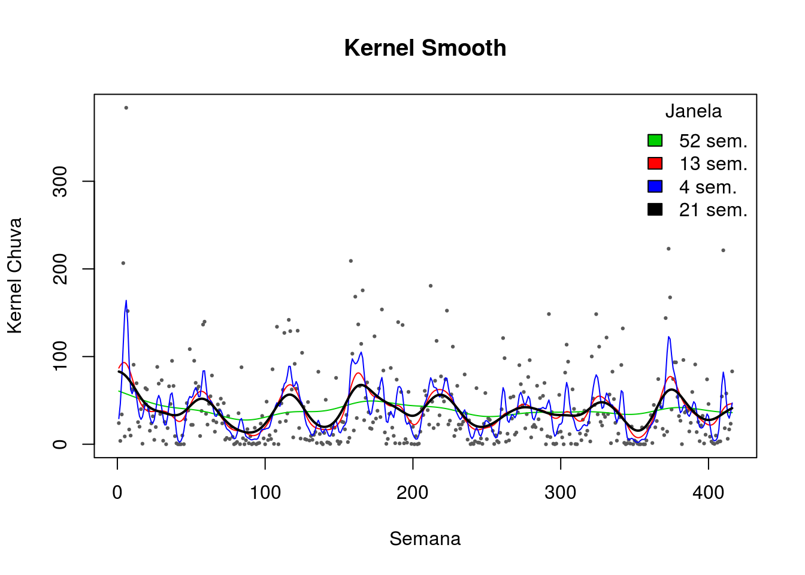
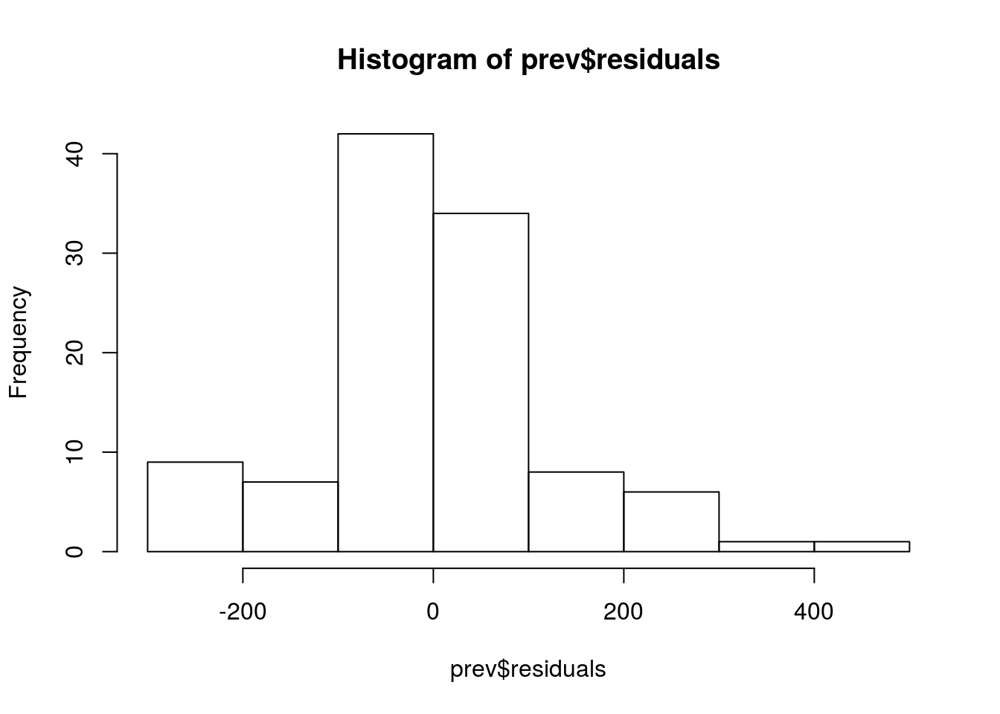
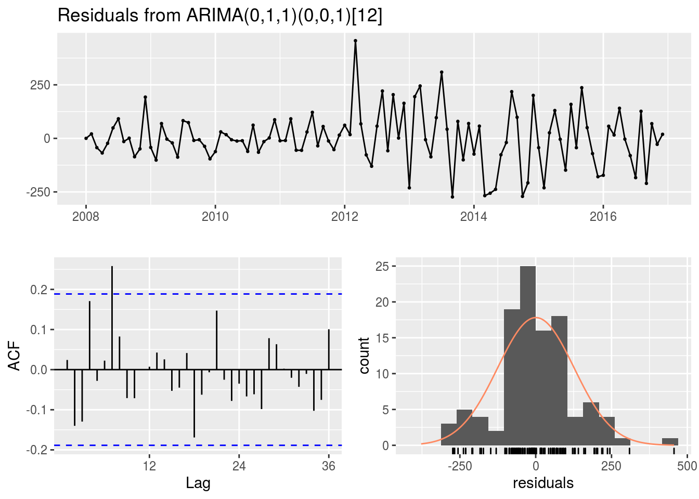

2 Aula marilia
2.1 Alisamentos - Lowess


2.1.1 Locally Weighted Sum of Square (Lowess)
- É uma regressão linear local ponderada
- A largura da janela é indicado por uma fração dos dados que varia de 0 a 1
- Exemplo: largura 0,1 significa que a janela tem largura que equivale a 10% do eixo horizontal
- Quanto maior o tamanho da janela, maior o alisamento e vice-versa2.2 Prática no R
2.3 Médias Móveis
setwd("~/Documentos/cursos_ecologicos_2019/dados")
dengue_original=read.csv("denguecases2.csv")
denguecasests=ts(dengue_original$Dengue_Cases,start=c(2008,1),end=c(2016,12),frequency=12)
par(mfrow=c(2,2))
plot(denguecasests, main="ST original")
#Função do pacote forecast que é utilizado para suavização e limpeza de outliers
dengue3 = tsclean(denguecasests)
plot(dengue3, main="Suavização e Limpeza")
# Média móvel de ordem = 5
dengue1 = ma(denguecasests, order = 5 )
plot(dengue1, main="MA ordem 5")
# Média móvel de ordem = 12
dengue2 = ma(denguecasests,order=12)
plot(dengue2, main="MA ordem 12")
plot(denguecasests, lwd=1.5)
lines(dengue1, lwd=1.5, col="red")
lines(dengue2, lwd=1.5, col="blue")
lines(dengue3, lwd=1.5, col="green")
#legenda
legend("topright",legend=c("Original","MA 5","MA 12","tsclean"), col = c("black","red","blue","green"), lty=1:2, cex=1)
2.4 Análise dos Resíduos
prev = auto.arima(denguecasests)
head(prev$residuals) Jan Feb Mar Apr May2008 0.1311332 20.8814031 -43.3428168 -68.3229542 -23.0091775 Jun 2008 48.7772048
#analisando os residuais
autoplot(prev$residuals)
hist(prev$residuals)
var(prev$residuals,na.rm = T)[1] 15896.91
mean(as.vector(prev$residuals),na.rm = T)[1] 0.5186493
Segundo o teste de autocorrelação Ljung-Box, temos:
\(H_{0}\): Os resíduos são i.i.d.
\(H_{1}\): Os resíduos não são i.i.d.
Segundo o teste de normalidade Shapiro-Wilk, temos:
\(H_{0}\): Os resíduos apresentam normalidade na distribuição
\(H_{1}\): Os resíduos não apresentam normalidade na distribuição
#acf
acf(prev$residuals, na.action = na.pass)
#funcao especial para checar residuais
checkresiduals(prev) Ljung-Box test
data: Residuals from ARIMA(0,1,1)(0,0,1)[12] Q* = 26.006, df = 20, p-value = 0.1656
Model df: 2. Total lags used: 22
#teste de normalidade
shapiro.test(prev$residuals)Shapiro-Wilk normality testdata: prev$residuals W = 0.96905, p-value = 0.01275
Como o p-valor = 0.1656 para o tete de Ljung-Box, podemos dizer que não existe evidências de que exista autocorrelação entre as incidências de dengue no período de estudo.
Também podemos verificar que o pressuposto de noralidade não pode sr aceito, pois *p-valor = 0.01275 do teste de shapiro-wilk.